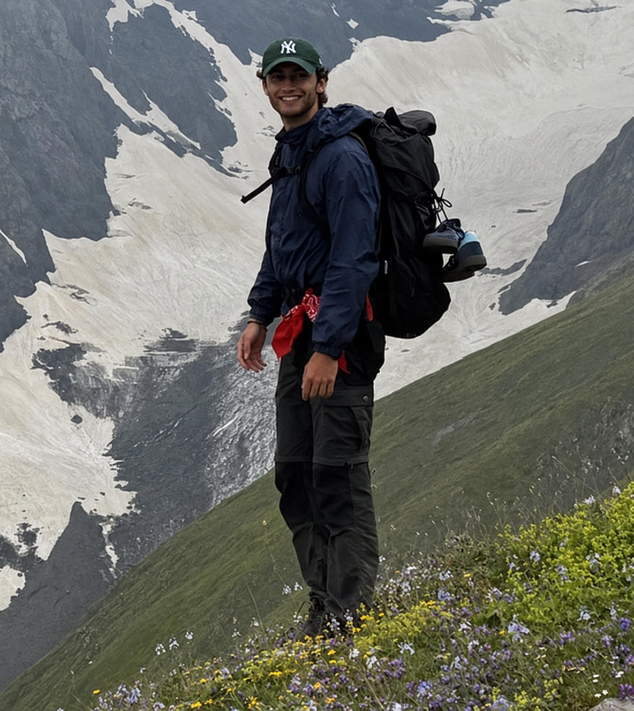

About me
I’m Luca.
I’m studying Mechanical Engineering at Northeastern University, with an aerospace minor. I’m interested in mechanical design and testing, especially where analysis meets real hardware.
My work includes microscopy hardware at Mecwins, powered-descent simulation, and mechanical development for Dogtooth. I’ve also worked in aerospace quality engineering at Pursuit Aerospace.
Outside engineering, I’m an Eagle Scout and a native English and Spanish speaker.
Design & analysis
SolidWorks · CSWA Certified
ANSYS FEA & CFD · Siemens NX
GD&T · AutoCAD
Build & program
3D printing · Laser cutting
Python · MATLAB · C++
Arduino · Soldering
Simulation
Airfoil CFD and flow visualization
Static stress and displacement analysis
Trajectory optimization with CVXPY
Prototyping & inspection
Printed gear trains and enclosure fit checks
CMM and optical comparator inspection
Surface profilometry and root cause analysis